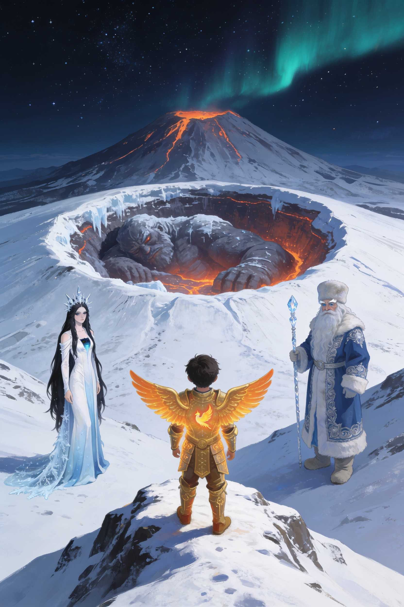
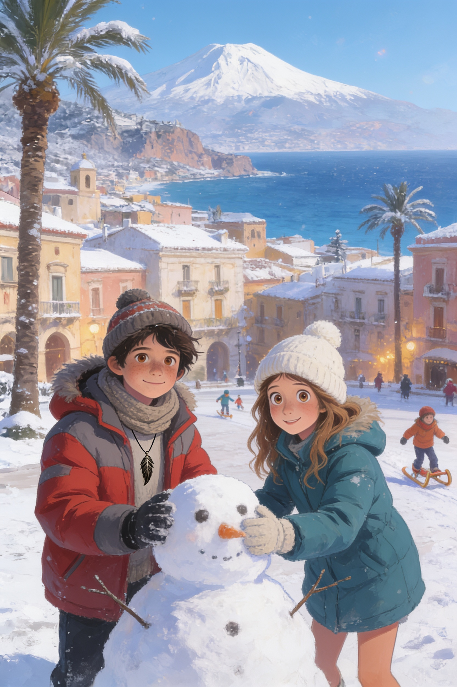
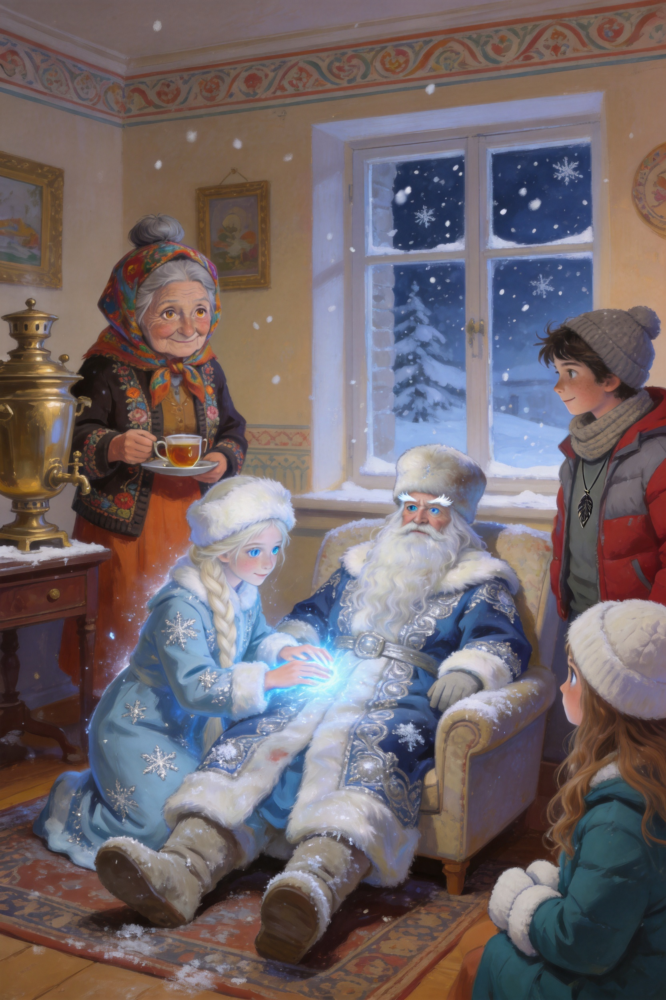
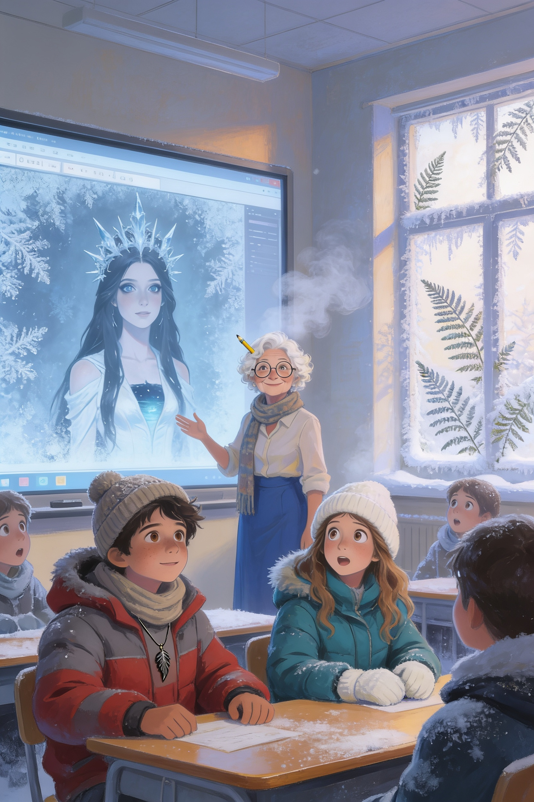
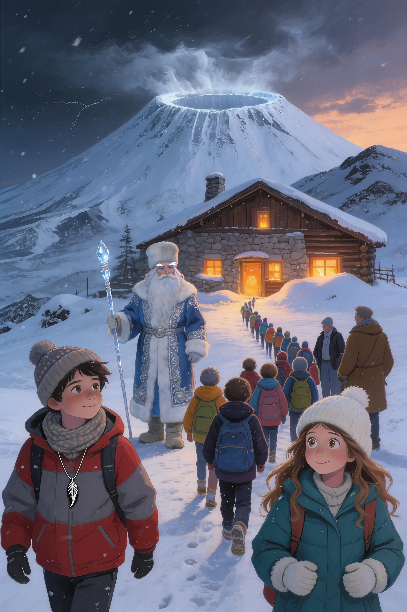
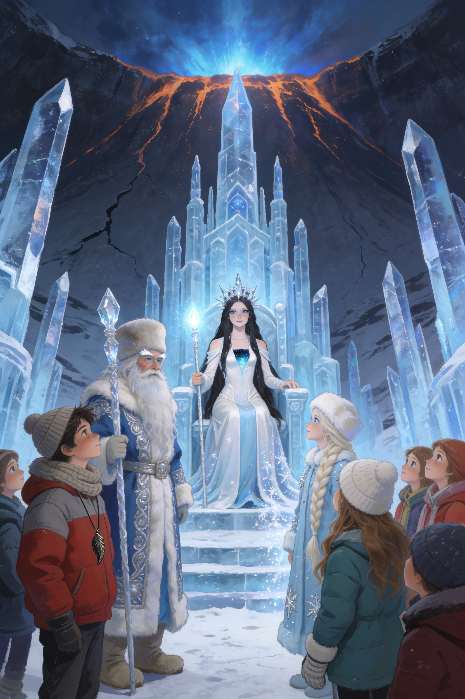
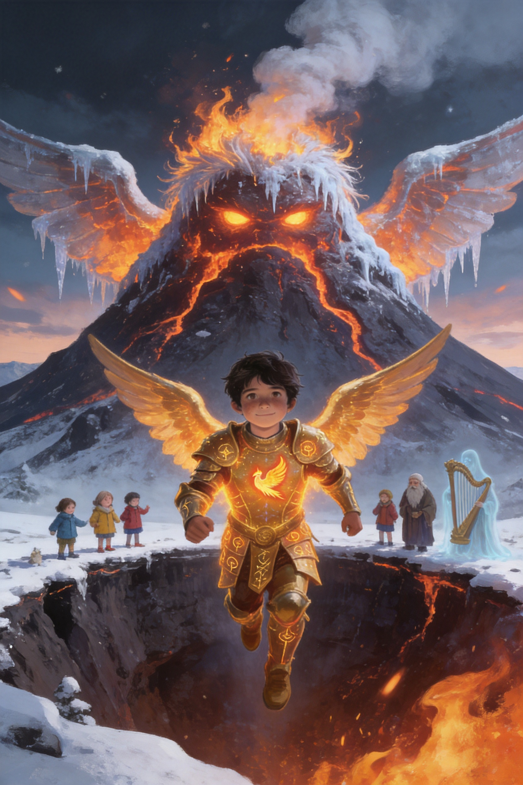
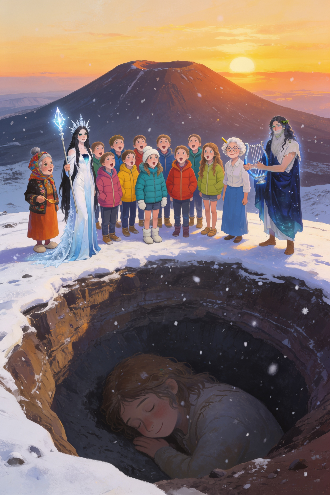

Il Custode
e l'Inverno
Eterno
Il Custode dell'Etna · Libro 5 · Finale
Vlad Editore

Il Custode dell'Etna · Libro 5 · Finale
Vlad Editore
Il Custode dell'Etna · Libro 5
Capitolo 1
✦ ✦ ✦
Il 2 gennaio, a Taormina, nevicò. A Taormina non nevica mai. Nevica sull'Etna, certo, e a volte sulle Madonie, ma sul paese no. I vecchi dicono che l'ultima volta era stato nel 1956, e che anche allora la neve era durata un solo pomeriggio.
Questa volta durò tre giorni. Cadde sui tetti di tegole rosse, sulle palme, sulle moto parcheggiate, sul Teatro Antico e sul mare, dove sembrava sciogliersi appena toccava l'acqua. Le strade si fermarono, gli autobus rimasero nei depositi, e tutta la gente uscì sui balconi a guardare, con le tazze in mano e la faccia di chi non sa se ridere o preoccuparsi.
Vlad e Ludovica furono i primi della classe a uscire. Alle otto del mattino erano già in piazza IX Aprile, con i cappelli di lana ancora della Russia e i guanti troppo grandi, a costruire un pupazzo di neve più alto di un lampione.
— Gli serve il naso — disse Ludovica.
— Una carota?
— Ce l'ho. — Estrasse dalla tasca una carota, un po' mollica, e la infilò nella faccia di neve. — Gli occhi di carbone li abbiamo già. Un pupazzo siciliano deve avere stile, ma anche questo va bene.
Intorno a loro, sulla piazza, erano arrivati in tanti: Mia con la sorella piccola, Marco e Stefano con una palla di neve a testa, Salvatore che mangiava la neve dalla ringhiera e giurava che sapeva di limone.
Fu in quel momento che Vlad sentì, sotto la camicia, il ciondolo diventare freddo. Non tiepido, come quando la Piuma lo avvisava: freddo come un pezzo di ghiaccio.
Alzò la testa. Il cielo era bianco e fermo. Eppure, da qualche parte, da molto lontano, veniva un suono sottile e argentino, che non riusciva a collocare. Campanelli. Un tintinnio regolare, come di una slitta su una strada lunga.
— Lo senti? — chiese a Ludovica.
Lei si fermò, con il mandarino in mano. Ascoltò. Il suono veniva dall'alto, forse dalla montagna.
— Lo sento — disse. — Ma non so se mi piace.
— Neanch'io. Andiamo da nonna Tanya.

Nonna Tanya era sul balcone, con la tazza di tè in mano e un plaid sulle spalle. Guardava la neve cadere con un'espressione che Vlad non le aveva mai visto: non preoccupata, né spaventata. Piuttosto, quella di chi riceve una visita attesa da tanto tempo.
— L'hai sentito anche tu — disse Vlad, salendo di corsa.
— Da questa notte — rispose lei. — Pensavo di sognare. Ma il samovar ha cominciato a fischiare da solo, alle tre, e il samovar non sbaglia.
Posò la tazza sulla ringhiera. La neve le si posò sui capelli grigi come una corona sottile.
— Vladik. Ti ricordi che ti ho raccontato di Ded Moroz?
— Nonno Gelo? Quello dei regali di Capodanno?
— Quello. Solo che non porta i regali, non soltanto. Porta l'inverno. E quando l'inverno arriva dove non dovrebbe, vuol dire che c'è qualcosa che non va.
Ludovica aprì il quaderno verde. Sulla copertina, sotto DOSSIER G e DOSSIER K, aveva già scritto, con il pennarello rosso, una nuova etichetta: DOSSIER Z.
— Z? — chiese Vlad.
— Per «Zima». Vuol dire inverno, in russo. L'ho chiesto a Sofia ieri sera. — Aprì alla prima pagina bianca. — Allora. Cose strane: uno. Neve a Taormina. Due: il ciondolo di Vlad è freddo. Tre: campanelli. Quattro...
Si fermò. Dal balcone, in lontananza, si vedeva la cima dell'Etna. Di solito era grigia, con il suo pennacchio di fumo. Quella mattina era completamente bianca. E il fumo non c'era.
— Quattro — disse piano. — L'Etna ha smesso di fumare.
Per un momento nessuno parlò. Poi, dal fondo della valle, venne un rombo basso, come un respiro trattenuto.
Il telefono di Vlad vibrò: era Sofia. Il messaggio diceva soltanto: «Guardate la villa comunale. Presto.»
— La villa comunale? — chiese Vlad.
— Andiamo — disse la nonna, già con il cappotto in mano. Per una signora di settant'anni, in quel momento, correva in modo impressionante.
Scesero per le scale, fino alla strada. La neve ormai arrivava alle caviglie e ogni passo faceva un rumore morbido. In giro c'erano meno persone, e quelle poche guardavano tutte nella stessa direzione: verso l'alto, verso il giardino terrazzato che si affacciava sul mare.
Lassù, sopra gli alberi, qualcosa luccicava. Qualcosa di grande e blu, come un pezzo di cielo caduto di traverso.
Davanti al cancello della villa comunale, Sofia li aspettava. Era l'unica della classe ad aver avuto il coraggio di entrare, e adesso era ferma sul sentiero, pallida, con gli stivali pieni di neve.
— Non l'ho toccata — disse subito. — Ho solo guardato. E ho riconosciuto la lingua che parla.
— Chi? — chiese Vlad.
Sofia indicò, in silenzio, in mezzo alle aiuole innevate. C'era una slitta: grande, di legno intagliato, dipinta di blu e argento, con le stanghe spezzate e un lato schiacciato contro un albero di mimosa. Tre cavalli bianchi, senza briglie, stavano immobili, con la neve sulla criniera.
Accanto alla slitta, steso sulla schiena, c'era un vecchio altissimo, con una barba bianca lunga fino alla cintura. Sul suo cappotto azzurro, ricamato d'argento, si allargava una macchia scura.
— Ded Moroz — sussurrò la nonna.
Il Custode dell'Etna · Libro 5
Capitolo 2
✦ ✦ ✦
Non era sangue. Vlad se ne accorse appena si inginocchiò: la macchia scura sul cappotto era brina nera, una crosta di ghiaccio che si allargava piano, come se il vecchio si stesse congelando dall'interno.
— Nonno? — disse, in russo. — Dedushka?
Gli occhi del vecchio si aprirono. Erano di un azzurro chiarissimo, il colore del ghiaccio sottile sui laghi, e per un momento non misero a fuoco niente. Poi si fermarono su Vlad e sulla nonna, e lui sorrise, stanco, dentro la barba.
— Tanya — mormorò. — Tanechka. Sei diventata vecchia.
— Anche tu, Moroz — rispose la nonna, e le tremava un po' la voce. — E sei caduto da un cielo molto in basso.
— Non siamo caduti — disse una voce sottile. — Ci hanno buttati giù.
Dalla slitta schiacciata, con la cautela di un gatto, scese una ragazza. Poteva avere tredici anni, come loro. Aveva una treccia lunghissima, chiara come lino, la pelle pallida e due occhi azzurri che sembravano guardare attraverso le cose. Il cappotto, celeste con ricami d'argento a forma di fiocco, brillava appena.
— Mi chiamo Snegurochka — disse, in italiano, con un forte accento. — Ma i miei amici mi chiamano Sneg. Voi siete i Custodi?
Vlad e Ludovica si guardarono.
— Io sono Vlad — disse lui. — Lei è Ludovica.
— Allora sì — disse la ragazza, e per la prima volta il suo volto cambiò: si sciolse, per un attimo, in qualcosa che somigliava al sollievo. — Vi stavamo cercando. Mio nonno non può muoversi. Ci hanno rubato il bastone.
Lo portarono nel soggiorno di nonna Tanya, tutti insieme: Vlad e Ludovica alle spalle, Sofia alle gambe, Snegurochka che reggeva la testa del nonno e la nonna che apriva le porte. Ded Moroz era alto più di due metri e occupò tutto il divano, e metà del tavolino.
La nonna accese il samovar. Sneg posò le mani sul petto del vecchio, e dalle sue dita uscì una luce azzurra, fredda, che sciolse piano piano la brina nera. Il respiro di Ded Moroz si fece più lungo.
— Il bastone di cristallo — spiegò Sneg, con gli occhi fissi sulle sue mani. — È dove sta la forza dell'inverno. Senza, il nonno non può più dire alla neve quando fermarsi. E chi tiene il bastone ora... decide lui.
— Chi lo tiene? — chiese Ludovica, con la penna già in mano.
Sneg la guardò. Poi guardò la finestra, dove la neve continuava a cadere, fitta e silenziosa.
— Mia zia — disse. — Marena.

— Marena — ripeté la nonna, e posò la teiera con troppa attenzione. — Non pensavo che ci fosse ancora.
— Ci sarà sempre — disse la voce di Ded Moroz, bassa e roca, dal divano. Aveva riaperto gli occhi. — È l'inverno, Tanya. Una metà dell'inverno. Io porto la neve che dorme e le luci di Capodanno. Lei porta il gelo che resta. Siamo fratelli da prima che i fiumi avessero i nomi.
— E perché ha rubato il bastone? — chiese Vlad.
— Perché è stanca. — Il vecchio chiuse gli occhi. — Ogni primavera, nei villaggi, fanno un fantoccio di paglia con il suo nome. Lo chiamano Marzanna. Lo portano sul fiume, lo bruciano, lo gettano nell'acqua. È una festa, dicono, e ridono. Ma lei lo sente, ogni volta, fino all'ultimo.
Ludovica smise di scrivere. Per una volta non le venne niente da dire.
— Quindi vuole un inverno senza fine — disse Sofia, piano. Era la prima volta che parlava dopo la villa. — Per non essere più bruciata.
— Per non essere più dimenticata — corresse Sneg. — Bruciata e dimenticata. È diverso, ma lei non lo sa.
La nonna guardò Vlad, poi Ludovica, poi Sofia, e infine Sneg, e Vlad capì che stava contando.
— Dove l'avete vista l'ultima volta? — chiese.
— Sull'Etna — disse Sneg. — In cima. Ha portato il bastone nel cratere. Sta ghiacciando la montagna dall'interno. — La sua voce si abbassò. — Ma c'è una cosa, sotto, che dorme, e il gelo...
— Tifeo — disse Vlad.
Sneg annuì. Fuori, il rombo basso della montagna si fece più forte, e le tazze, sul tavolo, tintinnarono.
— Spiegatemi come funziona — disse Ludovica, con il quaderno aperto. — Tifeo dorme perché la montagna è calda e c'è la Piuma che lo tiene tranquillo, giusto? Giorno e Notte. Ma se l'Etna si congela...
— Il fuoco e il ghiaccio non possono stare nello stesso posto — disse Ded Moroz, mettendosi a sedere con fatica. — Quando si toccano, la roccia si spacca. È questo che sta succedendo. Il gelo di Marena sta crepando l'Etna come un bicchiere versato dentro l'acqua bollente.
— E Tifeo...
— Si sveglierà. Non perché qualcuno lo chiama, ma perché la montagna che lo teneva fermo non regge più. E quando si sveglia di fuoco e di ghiaccio, non lo ferma né il Giorno né la Notte. Nemmeno da soli, né due insieme.
Silenzio. Vlad sentì il ciondolo, sul petto, battere piano come un cuore piccolo.
— Allora ci servono tutti e tre — disse. — Il Giorno, la Notte e l'Inverno.
— E non basterà neanche questo — disse Ded Moroz. Guardò i ragazzi uno per uno, con quegli occhi di ghiaccio che sembravano vedere molto avanti. — Ci vorrà qualcosa che nemmeno un Custode ha da solo.
— Che cosa? — chiese Ludovica.
— Una classe.
Vlad non capì subito. Poi pensò a Arione, alla corda di voci, a venti compagni che cantavano insieme in una notte senza luna. Pensò alla professoressa Siligato, che non si era mai dimenticata di niente.
— Domani riapre la scuola — disse. — Alle otto e cinque.
— Alle otto e cinque — ripeté la nonna, e sorrise per la prima volta quella mattina. — Allora dormiamo, Vladik. Domani c'è lezione.
Il Custode dell'Etna · Libro 5
Capitolo 3
✦ ✦ ✦
La scuola riaprì il 5 gennaio, con due ore di ritardo e un cartello sul cancello: «Entrare con prudenza, il pavimento è scivoloso». La neve, sul cortile di Trappitello, era alta mezzo metro, e il bidello aveva spalato soltanto un sentiero stretto, come una pista da bob.
Vlad e Ludovica arrivarono alle otto e cinque, con il fiatone. Dietro di loro, un po' timida, camminava Snegurochka, con un cappellino di lana che la nonna le aveva prestato e una cartella in prestito da Ludovica.
— Ricordati — disse Vlad. — Sei una cugina russa in visita.
— Lo so — disse Sneg. — Cugina. Russa. In visita. Sono molto brava a stare ferma.
In classe c'erano tutti. Jaela mostrava a Beatrice una piroetta con le braccia, Manuela ripassava per un compito che nessuno ricordava di avere, Riccardo aveva già fatto una battuta sulla neve («A Taormina l'unica cosa che non si scioglie è il caffè!»). Salvatore dormiva con la testa sul banco.
La professoressa Siligato entrò alle otto e dieci, con la sciarpa e la matita tra i ricci bianchi, e posò sulla cattedra una borsa pesante. Salutò, con quel suo sorriso che sembrava avere sempre il tempo.
— Ragazzi — disse — lo so, la neve vi ha scombussolati. Ma abbiamo programma da recuperare. Oggi ripassiamo l'epica. Thomas, la LIM, per favore.
Thomas premette il pulsante. Lo schermo si accese, ma al posto della schermata blu apparve qualcos'altro.
Sullo schermo c'era brina. Una brina vera, che si allargava dall'angolo come un fiore bianco, con tutti i suoi rami e i suoi cristalli. In pochi secondi coprì l'intera lavagna.
— Prof — disse Thomas, con la voce un po' alta — non l'ho toccato io.
— Lo vedo — disse la prof, e si portò una mano alla bocca. Il suo respiro, in classe, era diventato una nuvola.
Faceva freddo. Un freddo improvviso, senza finestre aperte, che saliva dal pavimento. Le penne si congelarono nell'astuccio. Il vetro delle finestre si coprì di disegni di felci. Alice, che aveva alzato la mano per prima, la tenne alzata, pietrificata.
Sulla brina, lentamente, comparve un volto.

Era il volto di una donna bellissima, pallida come la luna, con i capelli neri che sembravano scendere fuori dallo schermo. Portava una corona di cristalli aguzzi. Aveva gli occhi scuri e lucidi come laghi gelati, e quando li alzò, tutta la classe ebbe la sensazione di essere guardata uno per uno.
— Piccoli Custodi — disse. La voce era bassa e dolce e gelida. — Piccola classe. Non spaventatevi. Non sono qui per farvi del male.
Nessuno si mosse. Sneg, in fondo, si era fatta così piccola dietro il banco che sembrava sparita.
— Sono Marena — continuò la donna. — Alcuni di voi mi conoscono con un altro nome. Marzanna. Morena. La vecchia che si porta via. Ogni primavera, in molti paesi, fanno un fantoccio di paglia con il mio viso e lo bruciano. E ridono.
— Questa volta non la farò finire — disse Marena. — Ho preso il bastone di mio fratello. Ho portato il gelo nel cuore del vulcano. Fra tre giorni, quando la luna crescerà, l'inverno sarà dappertutto, e non se ne andrà più. Nessuna primavera. Nessun fantoccio. Nessun fuoco.
La prof Siligato si alzò. Le tremavano le mani, ma la voce era ferma.
— Signora — disse. — Io non so chi lei sia. Ma questa è una classe di ragazzi. Se ha qualcosa da dire, lo dica a me.
Marena la guardò. Per un attimo, qualcosa nel suo viso si addolcì.
— Tu sei quella che ricorda — disse. — La conosco. Quella che conta tutti, anche quelli che nessuno conta. Non sei tu il mio problema, maestra. È il bambino.
Gli occhi neri si fermarono su Vlad.
— Custode del Giorno — disse. — Sei venuto a fermarmi. Ma pensa. Tu sei il Sole di questa terra. Quando arrivi tu, io devo andare via. Ti hanno insegnato che è giusto così. Ma nessuno ti ha mai detto che cosa si prova.
Vlad si alzò. Non sapeva bene perché. Il cuore gli batteva forte, ma si sentì dire:
— Mi dispiace.
Tutti si voltarono a guardarlo.
— Mi dispiace che ti brucino — continuò, a voce più bassa. — Non lo sapevo. Se me lo avessero spiegato prima, non l'avrei fatto. Ma non puoi congelare la montagna. Sotto c'è qualcosa che, se si sveglia, fa del male a tutti. A tutti, anche a te.
Per un istante, sulla brina, gli occhi di Marena vacillarono.
— Belle parole — disse Marena. Ma la sua voce si era fatta più fredda. — Le ho già sentite. Vengo dimenticata anche da chi mi chiede scusa. Domani sarà primavera, e io tornerò una storia da fantocci.
— Non domani! — gridò Ludovica, alzandosi. — Ci dia tre giorni! Li stia a sentire!
— Tre giorni — ripeté Marena, quasi sorpresa. — Ne ho già dati trecento anni. Va bene. Tre giorni. Poi la luna crescerà.
Il suo volto si sciolse nella brina. L'aria tornò a muoversi. I vetri si schiarirono, uno dopo l'altro, e sulla lavagna comparve di nuovo la schermata blu, con il logo del programma e un messaggio: «Aggiornamento in corso».
Nessuno rise. Salvatore, che si era svegliato proprio in quel momento, chiese soltanto, con la voce rauca:
— Ho perso qualcosa di importante?
Il Custode dell'Etna · Libro 5
Capitolo 4
✦ ✦ ✦
Alla fine della lezione, quando la campanella suonò, nessuno si alzò. La classe rimase ferma, in silenzio, a guardare la lavagna dove Marena era sparita.
La prof Siligato chiuse il libro. Si tolse la matita dai ricci, la posò sulla cattedra, e disse con calma:
— Sedetevi tutti. Chi ha sentito, senta. Chi non ha capito, chieda. Vlad, Ludovica: voi sapete qualcosa.
Vlad si alzò. Fu strano, perché fino a quel momento non aveva mai detto la verità in classe, tutta insieme. Aveva raccontato pezzi, ma mai tutto. E adesso, davanti a venti facce, doveva farlo.
— Sì — disse. — Lo so. E credo che sia ora che lo sappiate anche voi.
Raccontò tutto. Della Piuma, di Tifeo, di Ettore, di Arione, di Koschei. Parlò per quasi mezz'ora, con Ludovica che correggeva le date e Sneg, in fondo, che ogni tanto annuiva. Nessuno lo interruppe. Nemmeno Riccardo, che di solito aveva una battuta pronta per tutto.
Quando finì, ci fu un silenzio lunghissimo. Poi Alice alzò la mano. Naturalmente.
— Vlad — disse. — Ma tutto questo... è successo davvero? Anche quando abbiamo cantato il nome di Arione, a Capo Schisò?
— Sì.
— Allora lo sapevo — disse Alice, con un sorriso enorme. — Lo sapevo che non era un'allucinazione di gruppo. Ma, scusa... perché non ce l'hai detto prima?
— Perché avevo paura — disse Vlad. — Di non essere creduto. E di mettervi in pericolo.
— Tu non ci hai messi in pericolo — disse Vittoria. Aveva la voce piana e buona di sempre. — Ci hai portati con te. È diverso.
— E poi — aggiunse Martina, con gli occhi che le brillavano — io voglio andare. Adesso. Subito. Dov'è l'Etna?
— Fuori dalla finestra — disse Riccardo. — Quella cosa bianca grossa.
Qualcuno rise. Il ghiaccio, nella classe, si ruppe.
— Non si parte senza un piano — disse la prof Siligato, ma sorrideva. — Ma lo costruiremo insieme. Ognuno di voi sa fare qualcosa. Facciamo un elenco. Ludovica, hai il quaderno?
— Sempre — disse Ludovica. — Dossier Z, pagina nove.
E, per la prima volta in tutta la mattinata, la classe cominciò a lavorare.

Ludovica scrisse alla lavagna, e uno dopo l'altro i compagni dissero la loro parte.
— Io so tutte le leggende dell'Etna — disse Manuela, in prima fila. — Posso fare la guida storica.
— Io posso mappare la salita con il tablet — disse Thomas. — E collegare la LIM al telefono, così chi resta a scuola vede tutto.
— Io faccio i calcoli del vento e delle temperature — disse Wijdane, e tirò fuori una calcolatrice scientifica con la calma di una che avesse già finito il problema.
— Io so il russo e anche quello che dicono i russi tra le righe — disse Sofia. — Traduco per Sneg e per Ded Moroz, se parlano troppo in fretta.
— Io faccio la mappa dei luoghi — disse Aurora, che aveva già un quaderno aperto e una matita in mano. — Disegno tutto quello che vediamo, così nessuno si perde.
— Io e Stefano portiamo i sacchi e facciamo la traccia nella neve — disse Marco. — Siamo abituati alle corse campestri.
— Io mi attacco alla corda e scalo le pareti di ghiaccio — disse Jaela, e fece una piroetta tra i banchi. — La danza aerea serve anche a questo, no?
— Io vado davanti — disse Martina. — Qualcuno deve.
— Io tengo calmi gli altri — disse Jasmin, con la sua voce quieta. — Quando uno ha paura, si respira insieme. Funziona sempre.
— Io dico a tutti che ce la facciamo — disse Beatrice, con entusiasmo. — Anche se non lo so ancora.
— E io lo ripeto se lo dimentica — aggiunse Vittoria, piano.
— Io mi occupo di orientarci con la bussola — disse Reyana, sicura. — Non sbaglio mai direzione.
— Io faccio le domande giuste — disse Simone. — Quando nessuno capisce, io chiedo: «Perché?»
— Io faccio ridere — disse Riccardo. — E in un momento brutto, ridere è una magia. Lo dico sul serio.
— Io porto da mangiare — disse Salvatore, sveglio finalmente. — Ho un thermos da due litri, pane, e un salame. E se qualcuno ha fame, non ragiona. Perciò ci penso io.
— Io sono neutra — disse Matilde. — Ascolto tutti e non litigo con nessuno. Se Marena vuole parlare, io posso farlo senza arrabbiarmi.
Mia, in fondo, non disse niente. Aveva le mani strette in grembo. Poi alzò gli occhi e disse a voce bassa:
— Io canto.
Ludovica la guardò. Poi guardò Vlad. Entrambi pensarono la stessa cosa, ma nessuno dei due lo disse.
La lista era lunga una pagina intera. Ludovica la guardò, soddisfatta, e scrisse in fondo, in stampatello: 21 + SNEG + LA PROF. SQUADRA ETNA.
— E gli altri? — chiese Simone. — Ded Moroz, Arione, nonna Tanya?
— Quelli li aggiungo dopo — disse lei. — Ho lasciato lo spazio. Una squadra non è mai finita.
La prof Siligato, in piedi accanto alla cattedra, si tolse gli occhiali per asciugarsi gli occhi. Non disse niente. Poi li rimise, e con la sua voce di sempre disse:
— Domani chiamo la preside e i vostri genitori. Gita didattica a Piano Provenzana, con maestra Siligato e due accompagnatori. Portate scarponi, guanti e un cambio completo. E, ragazzi...
— Sì? — dissero tutti insieme.
— Fate i compiti. Il mondo può finire, ma la grammatica no.
Il Custode dell'Etna · Libro 5
Capitolo 5
✦ ✦ ✦
Partirono il sabato mattina, alle sei, con un pullman a noleggio e tre genitori accompagnatori: il papà di Marco, la mamma di Beatrice e una zia di Salvatore che aveva portato da sola due teglie di arancini e un thermos di caffè da dieci litri.
Nonna Tanya era salita per ultima, con la sciarpa-serpente al collo e una cesta ricoperta di un panno ricamato. Vicino a lei si sedette Ded Moroz, rimesso in piedi dal samovar e dalle cure di Sneg, che dovette sedersi di traverso per entrare. Il conducente, vedendolo, disse soltanto: — Bella barba.
— Grazie — rispose Ded Moroz, con grande dignità. — È di famiglia.
La strada per Piano Provenzana, sul versante nord dell'Etna, saliva in curve strette tra pini e lava nera. Più si saliva, più la neve diventava alta, e il pullman andava piano, con le catene che battevano sulla strada come un tamburo lento.
Dentro, la classe cantava. Mia aveva cominciato una canzone, poi ci si era aggiunta Beatrice, poi Alice, poi tutti, e per mezz'ora il pullman fu un coro stonato e felice. Anche la prof Siligato cantava, con la voce un po' bassa, battendo il tempo sul sedile.
Vlad guardava fuori dal finestrino. Il ciondolo, sul petto, era freddo ma non spaventoso. Ludovica, accanto a lui, scriveva sul quaderno verde: 11. Quando cantiamo, il freddo sembra più piccolo.
Alle dieci arrivarono al rifugio, una grande casa di pietra e legno ai piedi del cratere, con le finestre già piene di neve fino alla metà. Era quasi vuoto: soltanto il custode, un signore con il maglione a righe, che li guardò scendere uno per uno dal pullman con l'espressione di chi non ha mai visto una gita scolastica così numerosa a gennaio.
— Ragazzi — disse. — La bufera arriva stasera. Vi consiglio di restare dentro.
— Restiamo dentro — disse la prof, senza esitare. — Ma ci servono le stanze e il camino. Oggi abbiamo una lezione molto speciale.
Il custode guardò Ded Moroz, che era appena entrato piegandosi sotto la porta, e decise di non fare domande.

Il pomeriggio passò in fretta. Thomas piazzò un drone sul tetto del rifugio e collegò le immagini al telefono della prof: dall'alto, il cratere sembrava un occhio bianco aperto sul cielo. Wijdane calcolò, con una calma quasi spaventosa, che il vento sarebbe girato alle sette e che la temperatura sarebbe scesa a meno diciotto.
— E il cratere? — chiese Vlad.
— Cresce — disse Wijdane. — Di dieci centimetri l'ora. Il ghiaccio si espande dentro, la roccia si crepa. — Sollevò gli occhi dal foglio. — Se continua così, fra due giorni la montagna si apre. Come una noce.
Nessuno disse niente. Salvatore, per una volta, posò il panino che stava mangiando.
Alle sette arrivò la bufera. Il vento ululava intorno alle pareti, e la neve sbatteva contro i vetri come ghiaia. Dentro il rifugio, davanti al camino, la classe si era radunata in un grande cerchio: zaini, coperte, termos e le due teglie di arancini della zia di Salvatore, che nessuno aveva il coraggio di dire che erano finite.
Ded Moroz, seduto su una panca, con la barba che toccava terra, parlava piano. Sofia traduceva.
— Dice che l'inverno non è cattivo — sussurrava. — Dice che l'inverno è il riposo della terra. Senza, non ci sarebbe niente da far germogliare. Ma dice anche che il riposo, se dura troppo, diventa un sonno senza sogni.
— Come Tifeo — disse Simone.
— Come Tifeo — confermò Ded Moroz, in italiano, con la sua voce di tuono dolce.
A mezzanotte, quando quasi tutti dormivano, Vlad uscì sul portico. Non per coraggio: non riusciva a stare fermo. Fuori la bufera si era calmata un poco, e tra le nuvole si apriva uno squarcio, dove brillava una luna sottile, appena un filo.
Accanto a lui, appoggiata alla ringhiera, c'era Sneg. Aveva la treccia sciolta sulla spalla, e sul suo respiro non si formava nessuna nuvola: lei era fatta di freddo, e non poteva scaldarsi.
— Hai paura di tua zia? — chiese Vlad.
— Un po'. — Lei sorrise, piccola. — Ma non perché è cattiva. Perché ha ragione, e io non so come dirle di no.
Vlad restò zitto un momento. Poi disse:
— Lo sai che significa avere ragione e sbagliare lo stesso? Ci vuole coraggio per dirlo.
Fu allora che sentirono la musica. Veniva dal basso, dalla valle, dal punto in cui la montagna si apriva sul mare: un suono lungo e chiaro, come di corde di una lira.
Una barca di luce risalì la pendenza, scivolando sulla neve come sull'acqua. Sopra, in piedi, con il mantello blu notte che sembrava fatto di stelle, c'era un uomo alto, con una barba corta e gli occhi verdi.
— Arione — disse Vlad.
— Custode del Giorno — rispose il bardo, e s'inchinò. — Mi hanno chiamato. Ho sentito cantare, stasera, e ho pensato: ecco, è arrivato il momento. — Guardò Sneg, e il suo volto si addolcì. — E questa è l'Inverno. Eccoci tutti e tre. Il Sole, la Notte e il Gelo.
Alle loro spalle, sulla porta del rifugio, comparve nonna Tanya con la sua cesta in braccio.
— Allora è l'ora — disse. — Entrate, tutti. Prima di salire sul cratere, dobbiamo mangiare. Poi vi spiego che cosa c'è nella cesta.
Il Custode dell'Etna · Libro 5
Capitolo 6
✦ ✦ ✦
Nel rifugio, davanti al camino, la nonna posò la cesta sul tavolo e tolse il panno ricamato. Dentro non c'erano armi né incantesimi. C'era un libro piccolo, con la copertina di cuoio consumato e una cordicella di seta rossa che teneva insieme le pagine.
— Questo è il Libro dei Custodi — disse. — Quello vero. Me lo diede mia nonna, che lo ebbe dalla sua. Nessuno lo ha mai aperto per intero, perché è scritto in tre lingue, e non c'è mai stato qualcuno che le conoscesse tutte e tre.
Lo aprì. La prima pagina era in cirillico, la seconda in greco antico, la terza in una scrittura che Vlad non aveva mai visto, fatta di spirali e di rami.
— Ognuna di queste pagine — disse la nonna — è una strofa.
— Strofe di che cosa? — chiese Ludovica.
— Di una ninna nanna. — La nonna si sedette. — Tifeo non è un mostro, bambini. Non all'inizio. Era il figlio più piccolo di Gea, la Terra. Quando Zeus lo vinse, la madre pianse tanto che i suoi lacrimoni formarono i laghi di lava. Per tenerlo quieto, i Custodi cominciarono a cantargli una ninna nanna. Ma solo una voce non basta, per un figlio così grande.
— Servono tre voci — disse Arione, piano. Aveva posato la lira sulle ginocchia, e le sue dita sfioravano le corde senza suonarle. — Io ne canto una, in greco. La Piuma ne conosce un'altra, in russo. E l'Inverno, la terza, nella lingua dei boschi.
— Il gelo non l'ha mai cantata — disse Ded Moroz, con voce tesa. — Marena, da secoli, non canta più.
Sofia si chinò sul libro. Con il dito seguì le lettere cirilliche, sillabando a bassa voce, e quando arrivò in fondo alla riga, alzò la testa con gli occhi lucidi.
— Questa la conosco — disse. — È la ninna nanna che mi cantava mia nonna. Bayu-bayushki-bayu, ne lozhis' na krayu. «Ninna nanna, non dormire sul bordo, altrimenti verrà il lupetto grigio e ti prenderà per la coda.»
— È la strofa del Giorno — disse Vlad, e il ciondolo sul petto gli si scaldò. — La Piuma la riconosce.
La nonna annuì. — Ognuna delle tre ha un finale uguale: «Dormi, figlio, dormi. Qualcuno ti ricorda.» Ma il finale, nel libro, manca. Le ultime righe sono state cancellate dal tempo.
— Le riscriviamo noi — disse Ludovica, e prese il quaderno.

Arione suonò la sua strofa. Le parole greche uscirono dalla lira come acqua, lente e tonde, e nel rifugio tutti si fermarono ad ascoltare. Wijdane, che non aveva mai sentito il greco antico, chiuse gli occhi e dopo un po' disse a mezza voce:
— Ha lo stesso ritmo di una canzone che mi cantavano da piccola. Non le stesse parole. Ma lo stesso dondolio.
— Tutte le ninne nanne hanno lo stesso dondolio — disse Arione, con un sorriso. — È la sola lingua che tutti i bambini capiscono, prima di imparare a parlare.
Alice alzò la mano.
— Quindi — disse — se ognuno di noi canta la ninna nanna della sua nonna... nella sua lingua...
— Sarebbe una strofa in più — disse Ded Moroz, lentamente. — Una per ogni voce.
Nessuno parlò per un po'. Poi cominciò una cosa strana. Uno dopo l'altro, nel rifugio, i ragazzi si misero a pensare ad alta voce: alla nonna, a come cantava.
— La mia canta in siciliano — disse Salvatore. — Ninna oh, ninna oh. Ma con una parola che non so scrivere.
— La mia in ucraino — disse Sofia. — Lo conosco già.
— La mia nella lingua che si parla a casa mia — disse Wijdane. — Ma la so a memoria.
— La mia in italiano normale — disse Riccardo, e tutti risero. — Ma con una voce da bufalo.
— La mia non canta — disse Martina, sorprendentemente piano. — Ma mi sussurrava una cosa, quando ero piccola. Non so le parole, so il suono.
— Va benissimo — disse la nonna. — Il suono basta. Quando tutti sono pronti, Tifeo sente che qualcuno gli vuole bene.
Mia si alzò, in mezzo al cerchio. Non era mai stata la più coraggiosa della classe: era quella che cantava nel coro e arrossiva quando la guardavano. Ma adesso, al centro del rifugio, con tutti gli occhi addosso, respirò a fondo.
— Posso provare io a cominciare? — chiese. — Poi vi aggiungete voi.
— Certo — disse Vlad.
Mia chiuse gli occhi. Dalla sua gola uscì una nota sola, lunga e limpida. Poi un'altra. Poi una melodia semplice, di sei battute, che ricordava qualcosa che tutti avevano già sentito, in qualche lingua, in qualche stanza, in qualche notte di quando erano piccoli.
Fuori, la bufera, per un momento, si fermò ad ascoltare.
Alle tre del mattino la classe provava ancora, a voce bassa per non svegliare i genitori accompagnatori, che dormivano accanto al camino. Ogni strofa, in ogni lingua, si incastrava nelle altre come i pezzi di un puzzle. La prof Siligato scriveva le parole sul quaderno, con la matita tra i ricci, e ogni tanto correggeva una pronuncia con un sorriso.
Vlad, appoggiato al muro, guardava Sneg che, sola in un angolo, cantava in russo, quasi senza voce, una strofa sconosciuta.
— Cos'è? — le chiese, sedendosi accanto.
— La strofa dell'Inverno — disse lei. — Quella che nessuno canta più. Me l'ha insegnata mia zia, tanto tempo fa, quando ero piccola. Prima che smettesse.
Si guardarono. Vlad pensò, per la prima volta, che forse Marena non aveva dimenticato la ninna nanna. Forse aspettava solo qualcuno che le chiedesse di cantarla.
Il Custode dell'Etna · Libro 5
Capitolo 7
✦ ✦ ✦
La mattina dopo la bufera era finita. Il cielo era di un azzurro duro, senza una nuvola, e la neve brillava così forte che tutti dovettero mettersi gli occhiali da sole. I genitori accompagnatori rimasero al rifugio, con la zia di Salvatore e le teglie vuote. Salirono soltanto i ragazzi, la prof, la nonna, e i tre Custodi.
Marco e Stefano facevano la traccia, con le racchette ai piedi. Reyana teneva la bussola e non sbagliava mai. Jaela, appesa alla corda, scalava i tratti ripidi e poi lanciava il capo agli altri, uno dopo l'altro. Jasmin, in fondo alla fila, diceva a ogni ragazzo che arrancava: «Respira. Un passo. Un altro.»
Il cratere non era più un cratere. Dove una volta c'era una voragine nera, si apriva adesso un palazzo di ghiaccio: colonne altissime, archi trasparenti, scale di cristallo che salivano verso soffitti invisibili. Ogni superficie rifletteva la luce in mille colori, e il suono dei loro passi tornava indietro come una musica.
— È bellissimo — sussurrò Aurora, che aveva già smesso di disegnare, perché non sapeva da dove cominciare.
— Ed è terribile — disse Wijdane, guardando le crepe che correvano nelle pareti. — Guardate. Ogni colonna sta cedendo.
In fondo alla sala, su un trono di ghiaccio intagliato, sedeva Marena. In una mano teneva un bastone di cristallo, lungo e sottile, con una luce azzurra dentro. Sembrava più stanca di come l'avevano vista sulla lavagna.
— Siete venuti — disse Marena. — Tutti. Anche mio fratello. Anche la mia nipote. — Guardò Sneg, e per un momento la sua voce vacillò. — Pensavo che avreste mandato soltanto il bambino.
— Siamo una classe — disse la prof Siligato, facendo un passo avanti. — Non lasciamo nessuno solo.
Marena sorrise, amara. — Conosco quella frase. La dicono tutti, prima di dimenticare.
Nessuno rispose. Dopo un attimo si fece avanti Matilde, con le mani in tasca, senza fretta.
— Posso dire una cosa? — chiese. — Non voglio litigare. Voglio solo capire.
La Signora dell'Inverno la guardò. Poi fece un piccolo gesto con la mano: parla.

— Perché ogni primavera ti bruciano, secondo te? — chiese Matilde.
— Perché sono l'inverno. Perché porto il freddo, la fame, il buio. Perché la gente vuole che io me ne vada.
— Ma il fantoccio non lo bruciano per odio — disse Simone, curioso come sempre. — Mia nonna dice che è una festa. Che si saluta l'inverno per dargli il benvenuto la volta dopo.
— Come, il benvenuto? — chiese Marena, con le sopracciglia aggrottate.
— Se bruci qualcosa che torna ogni anno — disse Simone — vuol dire che aspetti che torni. Se non tornasse, non avrebbe senso bruciarlo.
La Signora dell'Inverno restò immobile. Nel palazzo, le colonne scricchiolarono.
— Non ci avevo mai pensato — disse piano. — Trecento anni, e nessuno me l'aveva mai detto in questo modo.
Riccardo fece un passo avanti, con le mani alzate.
— Posso fare una battuta? — chiese. — Giuro che è utile.
— No — disse Ludovica.
— Sì — disse Marena, quasi senza volerlo.
— Se sei l'inverno, hai un vantaggio — disse Riccardo. — Nessuno si lamenta del freddo quando c'è una cioccolata calda. Tu sei la ragione per cui esiste la cioccolata calda. Sei la madrina della cioccolata calda.
Per un secondo, nel palazzo, non si sentì niente. Poi, da qualche parte tra le colonne, risuonò una risatina sottile, che somigliava a un campanello. Marena si portò una mano alla bocca. Non voleva ridere, e rideva.
Fu allora che Snegurochka si staccò dal gruppo e salì i gradini di cristallo, uno alla volta, fino al trono. Si fermò davanti alla zia, senza toccarla. Aveva le mani strette e gli occhi pieni di lacrime.
— Zia — disse. — Io ricordo la strofa. La tua. Quella che cantavi quando ero piccola.
— Sneg. — La voce di Marena era un filo. — Non puoi.
— Posso — disse la ragazza, e cominciò a cantare. Una voce piccola e chiara, in russo, tra le colonne di ghiaccio. Era una melodia lenta, malinconica, di una dolcezza antica. Parlava di un fiume che si ferma, di una ragazza che dorme sotto la neve e aspetta che il sole la risvegli.
Marena chiuse gli occhi. Una lacrima, grossa come una perla, le scese lungo la guancia e cadde sul pavimento. Dove toccò il ghiaccio, nacque un fiorellino bianco: un bucaneve.
— Basta — mormorò Marena, aprendo gli occhi. Il bastone di cristallo, nella sua mano, tremava. — Ho smesso di cantare perché faceva troppo male. Ma adesso non so più come smettere di ascoltare.
Allungò la mano con il bastone verso suo fratello. Ded Moroz fece un passo avanti, con le braccia aperte.
E in quel momento, sotto i loro piedi, la montagna si spaccò.
Fu un rumore lunghissimo, come se un gigante stirasse la schiena dopo un sonno di mille anni. Il pavimento di ghiaccio si increspò. Le colonne cominciarono a cadere, una dopo l'altra, in una pioggia di cristalli. Il bastone sfuggì dalla mano di Marena e rotolò sui gradini.
— Fuori! — gridò la prof Siligato. — Tutti fuori! Insieme!
E dal fondo del cratere, dove la roccia si apriva, salì un respiro caldo e profondo, che sapeva di zolfo e di terra.
Il Custode dell'Etna · Libro 5
Capitolo 8
✦ ✦ ✦
Uscirono dal palazzo di ghiaccio mentre crollava. Marco e Stefano portavano in braccio i più piccoli, Jaela lanciò la corda per far scendere gli ultimi, Martina andò davanti e non si voltò mai. Dietro di loro le colonne si spezzavano con un rumore di vetri, e il cratere vomitava nuvole di vapore bianco.
Arrivarono sul bordo, ansimanti, e si voltarono tutti insieme.
Dal fondo del cratere, dove la roccia si era aperta, saliva qualcosa. Prima una mano: grande come una casa, fatta di lava solida e di ghiaccio, con le dita lunghe come campanili. Poi un braccio. Poi una spalla. Poi un volto.
Era una faccia enorme, antica, con occhi come due bracieri e una bocca da cui usciva fumo e gelo insieme. I capelli erano fiamme e stalattiti. Dalle spalle gli crescevano ali di vapore, lunghe quanto il cratere, che battevano piano, come quelle di un uccello appena uscito dal guscio.
Tifeo ruggì. Fu un ruggito che non si sentì con le orecchie, ma nello stomaco e nei denti. La neve, intorno, scivolò giù in valanghe. Dal basso, da Taormina, da Giardini Naxos, da Linguaglossa, si levarono le sirene degli allarmi.
— Tutti dietro di me — disse Vlad. Gli uscì dalla bocca prima che pensasse. E in quel momento, sul petto, la Piuma si accese.
L'armatura d'oro si formò sopra i vestiti, piastra dopo piastra, con le rune che brillavano. Le ali di fuoco si aprirono dietro la schiena. L'elmo, con la sua cresta arancione, si posò sulla testa.
Vlad si alzò in volo. Il fuoco della sua armatura contro il fuoco-e-ghiaccio di Tifeo faceva un fischio acuto, come una pentola che bolle. Il gigante alzò una mano e la calò su di lui, ma Vlad scivolò di lato, quasi per istinto.
— Arione! — gridò. — Adesso!
Il bardo, dal bordo del cratere, alzò la lira. Suonò una nota, una sola, lunghissima, e dalla lira uscì un'onda scura e luminosa, come una notte intera concentrata in un suono. L'onda investì Tifeo e lo rallentò, come un uomo che affonda in acqua profonda.
— Moroz! — urlò ancora Vlad. — Il bastone!
Ded Moroz, sul bordo, tese le mani. Ma le sue mani erano vuote. Il bastone di cristallo era rotolato giù, in fondo al cratere, e Marena, ferita dal crollo, era sparita tra le rocce.

Tifeo si scrollò di dosso l'onda notturna come un cane che si scuote l'acqua. Allargò le ali di vapore e un'ondata di calore e gelo investì il bordo del cratere. Qualcuno cadde. Salvatore scivolò, e Marco e Stefano lo afferrarono per i piedi un attimo prima che finisse giù.
— Non ce la faremo! — gridò Thomas, con il tablet in mano e la voce rotta. — Le temperature sono impazzite! Il vapore sta salendo a mille metri!
— Wijdane! — chiamò Ludovica. — Quanto tempo abbiamo?
— Venti minuti — disse Wijdane, calmissima, con la calcolatrice che le tremava in mano. — Poi il vulcano ci raggiunge.
— Venti minuti basteranno — disse la nonna Tanya, e per la prima volta, quella mattina, parlò con la voce da Custode, antica e ferma. — Ma dobbiamo cantare. Adesso.
Ma Tifeo non voleva ascoltare. Calò una mano gigantesca sul bordo del cratere e il suolo tremò. La roccia si spaccò in due, e in mezzo si aprì una crepa lunga, scura, che correva dritta verso i ragazzi.
— Indietro! — gridò la prof Siligato. — Tutti indietro!
Ma Vlad capì che scappare non sarebbe servito a niente. Tifeo era sveglio, spaventato, confuso, e come un bambino che si sveglia nel buio, non sapeva dove si trovava. Colpiva a caso, perché non sapeva fare altro.
Planò verso il bordo e si posò accanto a Ludovica, con le ali ripiegate.
— Ludovica — disse. — Ha paura. Come Koschei. Come tutti. Dobbiamo farlo calmare, non fermarlo.
Lei lo guardò. E annuì, con gli occhi lucidi.
— Mia — disse Ludovica, voltandosi. — Adesso.
Mia era pallida come il ghiaccio, con le mani tremanti. Davanti a lei, un gigante di fuoco ruggiva. Dietro di lei, tutta la classe la guardava.
— Non ce la faccio — sussurrò. — È troppo grande.
— Non ce la fai da sola — disse Jasmin, e le prese la mano. — Respira con me. Uno. Due.
— E noi siamo qui — disse Vittoria, dall'altro lato, e le prese l'altra.
— E se sbagli, non importa — aggiunse Beatrice, con gli occhi che le brillavano. — Sei bravissima. Davvero.
Mia chiuse gli occhi. Respirò. Poi, per la seconda volta in quei giorni, aprì la bocca e cominciò a cantare.
La sua voce, all'inizio, fu minuscola. Si perse nel vento. Ma subito dopo se ne aggiunse un'altra, e un'altra ancora: Sofia in ucraino, Wijdane nella lingua di casa, Salvatore in siciliano con la voce da basso, Sneg in russo, Arione in greco, nonna Tanya con quella ninna nanna di mille anni.
Tifeo si fermò. Il ruggito si spense. Gli occhi come bracieri si abbassarono sul bordo, sulle piccole figure che cantavano. Il gigante inclinò la testa, immenso, come un cane che ascolta un suono familiare e non riesce a ricordare dove l'ha già sentito.
Ma una voce mancava, e Vlad lo sentì. Nel coro c'era un vuoto, un posto, una strofa che non risuonava.
— La strofa dell'Inverno — sussurrò Ludovica.
Tutti si guardarono. Poi, insieme, guardarono in fondo al cratere, dove la Signora dell'Inverno era caduta.
Il Custode dell'Etna · Libro 5
Capitolo 9
✦ ✦ ✦
Vlad scese in volo lungo la parete del cratere. Dentro la crepa, tra le rocce nere e la brina, ferita, con i capelli sciolti e la corona rotta, sedeva Marena. Accanto a lei, a un metro, giaceva il bastone di cristallo, ancora intero, con la luce azzurra che pulsava piano.
Vlad atterrò, e l'armatura si spense in un respiro caldo. Rimase soltanto un ragazzo di tredici anni, in giacca rossa, davanti alla Signora dell'Inverno.
— Se sei venuto a prendermi il bastone — disse lei, senza guardarlo — prendilo. Non ho più forza.
— Non sono venuto per quello — disse Vlad.
— Siamo venuti a chiederti una cosa — disse Vlad. — Una strofa. Tifeo ha paura. Gliela canti tu?
— Io? — Marena alzò gli occhi. — Io non canto da trecento anni.
— Lo so. Sneg me l'ha detto. — Vlad si sedette accanto a lei, sulla roccia fredda, senza esitare. — Ma credo che non hai smesso perché non sapevi cantare. Hai smesso perché nessuno ti ascoltava.
La Signora dell'Inverno lo guardò a lungo. Poi, piano, raccolse il bastone di cristallo.
— E se la sbaglio? — sussurrò. — Se dimentico le parole?
— Allora le canteremo con te — disse Vlad. — Siamo molti. Non ti lasciamo sola.
Lei, per la prima volta, sorrise davvero. Era un sorriso piccolo, incerto, come quello di una ragazza che ritrova la strada di casa dopo tanto tempo.
Risalirono insieme, Vlad sorreggendo Marena, che camminava piano, con il bastone nella mano. Quando apparvero sul bordo del cratere, tutta la classe si voltò. Nessuno disse niente. Sneg corse verso la zia e l'abbracciò così forte che per poco non la fece cadere.
Tifeo, sul fondo, aspettava. Il suo respiro era più lento. I suoi occhi, grandi come due soli, erano fissi su di loro.
— Va bene — disse Marena. — Cominciamo.
Alzò il bastone di cristallo. Dalla punta uscì una luce azzurra, calda, non gelida, e dentro quella luce cominciò a cantare. Una voce bassa, vibrante, antica, con tutte le sfumature di una tristezza che non finisce ma non pesa più.
La strofa dell'Inverno riempì il cratere. E, uno dopo l'altro, tutti gli altri si unirono.

Fu la cosa più strana che Vlad avesse mai sentito, e la più bella. Venti voci diverse, ognuna in una lingua diversa, sovrapposte come strati di una torta, e nessuna copriva le altre. Mia teneva il filo, con la sua voce limpida. Sofia sosteneva, in ucraino, con una nota profonda. Salvatore faceva il basso, in siciliano, con una voce che nessuno pensava avesse. Alice, Beatrice, Martina, Jaela, Aurora, tutti, uno per uno, aggiungevano il loro pezzo.
Anche la prof Siligato cantava, con la sua voce da alto, e nella voce c'era quello che nessun libro riusciva a contenere: una promessa che durava.
Arione suonava la lira, con le dita leggere. Ded Moroz, accanto a Marena, con la barba che gli copriva il petto, cantava a bocca chiusa, con un basso lungo e dolce, che faceva vibrare la neve.
Tifeo ascoltava. Il suo volto di fuoco e di ghiaccio, enorme, si era abbassato fino al livello del bordo, come quello di un bambino che si addormenta sulla spalla della mamma. Le ali di vapore si ripiegarono. Le fiamme dei capelli si spensero, una dopo l'altra, in fiocchi di cenere bianca. Gli occhi come bracieri si chiusero.
Cantarono per un quarto d'ora, forse di più. Nessuno si accorse del tempo. Quando la ninna nanna finì, il silenzio fu così profondo che si sentì cadere un fiocco di neve.
Dal fondo del cratere, lentamente, la roccia cominciò a richiudersi. Il gigante affondò nella terra come un uomo nel proprio letto, tirandosi addosso la coperta della montagna. L'ultima cosa che si vide fu una mano immensa che si apriva, in un gesto stanco, e si posava a terra.
Poi la crepa si chiuse. E dal cratere, per la prima volta in una settimana, si alzò un sottile filo di fumo grigio.
Fu Simone a rompere il silenzio. — E adesso? — chiese. — Marena? La neve?
Tutti si voltarono verso la Signora dell'Inverno. Lei era in piedi, con il bastone in mano e Sneg accanto, e sul viso aveva un'espressione che nessuno le aveva mai visto: tranquilla.
— La neve scenderà ancora — disse. — Ma soltanto in cima, dove deve. Taormina riavrà il suo sole. E la primavera arriverà, quando sarà ora. — Si fermò. — E io non mi opporrò.
— E il fantoccio? — chiese Alice. — Quello che bruciano?
Marena guardò Vlad. Vlad guardò Ludovica. Ludovica guardò Riccardo. E fu Riccardo, naturalmente, a dire:
— Facciamo una cosa nuova. Una festa. Niente fuoco. Si fa una tazza di cioccolata calda, si saluta l'inverno e si dice «Grazie, torna presto». Mi sembra giusto.
Marena rimase zitta. Poi si coprì la bocca con la mano, e le spalle cominciarono a tremarle. Per un attimo tutti pensarono che piangesse. Invece rideva, di una risata liberata, lunga, come se venisse da molto lontano.
— La festa della cioccolata — ripeté. — Va bene. Va benissimo. La farò io. Ogni anno, l'ultimo giorno d'inverno, verrò a prendere la cioccolata, e qualcuno mi dirà grazie.
— Ci sarò io — disse Salvatore, subito. — Porto i biscotti.
Ded Moroz aprì le braccia, e per la prima volta dopo trecento anni Marena si lasciò abbracciare da suo fratello. La barba bianca li coprì tutti e due.
La nonna Tanya, accanto a Vlad, gli prese la mano e la strinse forte.
— Hai finito, Vladik — disse piano. — Hai finito davvero. Il Custode non è mai stato uno solo. Lo avevi già capito. Ma adesso lo sanno anche loro.
Il Custode dell'Etna · Libro 5
Capitolo 10
✦ ✦ ✦
Giugno, a Trappitello, è un mese di cicale e di compiti finiti. Il cortile della scuola, che a gennaio era sotto mezzo metro di neve, era diventato di un giallo polveroso, con i pini che facevano ombra e il cielo di un azzurro così pieno che sembrava caduto da un pennello.
Era l'ultimo giorno della seconda media. Le campanelle suonavano, le porte sbattevano, i banchi si svuotavano, e nei corridoi c'erano le firme sulle magliette, gli abbracci fuori orario e quella strana allegria di chi sa che tutto continua ma niente sarà come prima.
Vlad era seduto sul muretto, all'ombra, con il quaderno blu della prof Siligato sulle ginocchia. Non scriveva. Guardava il cortile.
Tante cose erano successe da gennaio. L'Etna aveva ripreso a fumare, un sottile pennacchio grigio ogni mattina, come una persona che pensa. A Taormina la neve si era sciolta in tre giorni, lasciando soltanto una leggenda e qualche foto sul telefono di Thomas.
L'ultimo giorno d'inverno, il 20 marzo, la classe aveva fatto la prima Festa della Cioccolata sul bordo del cratere, con le tazze di cartone, i biscotti di Salvatore e Marena seduta in mezzo, con una sciarpa di lana prestata da Mia. Aveva detto «grazie» a ognuno. Ded Moroz, arrivato di nascosto con la slitta riparata, aveva fatto la barba bianca a tutti con la schiuma del latte.
E a Natale, come promesso, Vlad e nonna Tanya sarebbero tornati a Kamenny. Kirill dormiva sotto la quercia, con un sorriso, e il Lupo Grigio aveva fatto sapere, tramite un corvo, che lo teneva d'occhio. Vlad aveva già comprato il pane nero. E un panettone, per ogni evenienza.
— Eccoti — disse Ludovica, sedendosi accanto a lui con due gelati. — Pensavo che ti fossi dimenticato della fine della scuola.
— Non me lo dimenticherei mai. — Vlad prese il gelato, al limone, naturalmente. — Stavo pensando.
— A che cosa?
— A quando sono arrivato in Italia. Avevo nove anni. Non parlavo bene, non conoscevo nessuno. Pensavo che sarei stato sempre quello diverso, quello dell'altro posto. — Guardò il cortile, dove Riccardo faceva ridere Beatrice con una smorfia. — E invece guarda.
— Guarda cosa?
— Che quello diverso aveva un sacco di amici, e che un sacco di amici avevano un pezzo di lui senza saperlo. La ninna nanna di nonna Tanya. La storia di Kirill. La neve.

La prof Siligato li trovò così, sul muretto, a mangiare il gelato. Aveva la borsa piena di quaderni e la matita tra i ricci, e sembrava stanca e felice come ogni maestra l'ultimo giorno.
— Ah, eccovi. Ludovica, hai ancora il quaderno verde?
— Sempre — disse lei, e lo tirò fuori dallo zaino.
— Posso vederlo?
Ludovica glielo porse. La prof lo sfogliò lentamente, un dossier dopo l'altro: G, K, Z. Pagine fitte, con le date, le liste, i disegnini di Aurora ai margini, le frasi di Sofia in cirillico. Alla fine si fermò sull'ultima pagina, quasi vuota.
— Qui che cosa va? — chiese.
— Ancora niente — disse Ludovica, con un mezzo sorriso. — Ma sento che servirà.
La prof sorrise. — Lo sentivo anch'io.
Poi si rivolse a Vlad. — Il quaderno blu. Mi hai promesso che avresti scritto tutto.
— Ho scritto tutto, prof.
— Anche le parti difficili?
— Soprattutto quelle. — Vlad guardò il quaderno, chiuso sulle ginocchia. — Ma ho lasciato un'ultima pagina da scrivere. Non so ancora come finire.
La prof si sedette accanto a lui, sul muretto, e per un momento restarono zitti a guardare il cortile. Salvatore stava cercando di convincere Marco che un gelato dopo la scuola non si poteva contare come merenda. Wijdane spiegava a Thomas un teorema. Mia cantava piano, tra sé, con le cuffie. Jaela, sul prato, faceva la ruota.
— Sai — disse la prof — nei libri le storie finiscono quando i protagonisti sono felici. Nella vita non finiscono mai. Cambiano soltanto narratore.
Vlad aprì il quaderno all'ultima pagina. Prese la penna. Per un po' la tenne sospesa, poi cominciò a scrivere, senza fretta, con la sua calligrafia ordinata.
«Mi chiamo Vlad. Sono nato in Russia e vivo in Italia. Ho tredici anni. Ho avuto una Piuma, un'armatura e un gigante da calmare. Ma la cosa più importante che ho imparato non è un potere.
Il Custode non è mai uno solo. È una nonna che racconta, un'amica che scrive, una professoressa che ricorda, una classe che canta, ognuno nella sua lingua. È anche un nemico che ha paura, quando qualcuno gli dice come si chiama.
Se qualcuno sta leggendo questo libro, vuol dire che adesso tocca a lui. Cerca qualcuno da ascoltare. Scrivi quello che vedi. E, quando hai paura, dillo lo stesso: «Ya ne boyus'». Funziona.»
Il Custode dell'Etna
Fine della serie
✦ ✦ ✦
Un libro di Vlad, scritto con l'aiuto dell'intelligenza artificiale.
Grazie alla professoressa Marcella Siligato, che ci ha dato il permesso di usare il suo nome e che ricorda sempre tutti.
Grazie ai compagni della seconda media dell'IC 1 Taormina, plesso Trappitello, che sono la Squadra Etna: Alice, Aurora, Beatrice, Jaela, Jasmin, Ludovica, Manuela, Marco, Martina, Matilde, Mia, Reyana, Riccardo, Salvatore, Simone, Sofia, Stefano, Thomas, Vittoria e Wijdane.
Ded Moroz, Snegurochka, Marena e Tifeo vengono dalle fiabe e dai miti, raccontati qui in modo inventato. Zinaida, Kirill e Arione sono personaggi di fantasia o di leggenda.
E grazie a nonna Tanya, che ci ricorda da dove veniamo, e a chi sta leggendo.
✦ ✦ ✦
Il Custode non è mai uno solo.
Vlad Editore